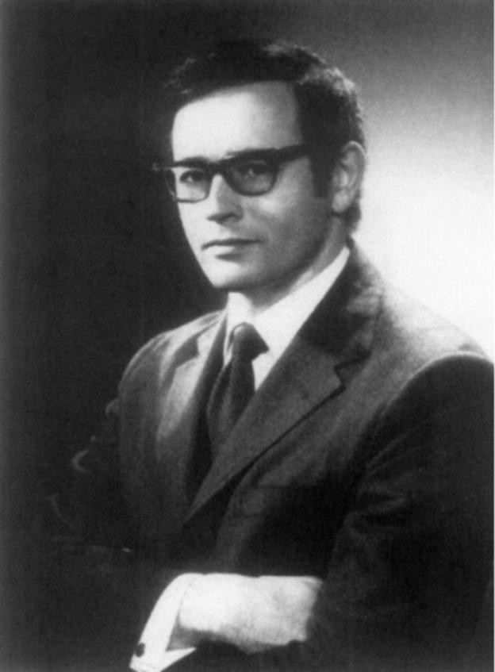
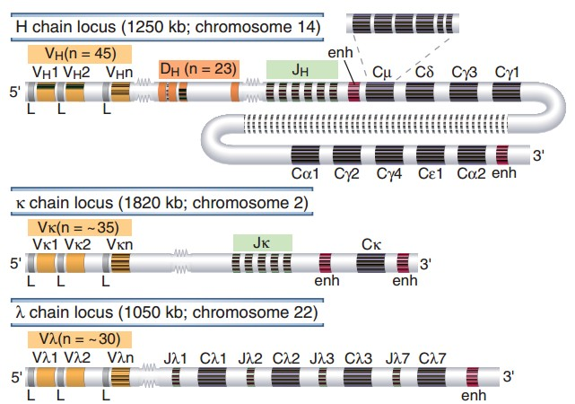
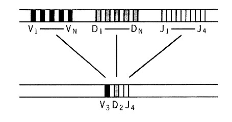
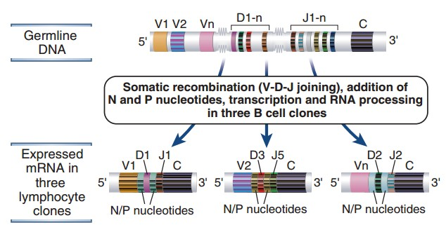
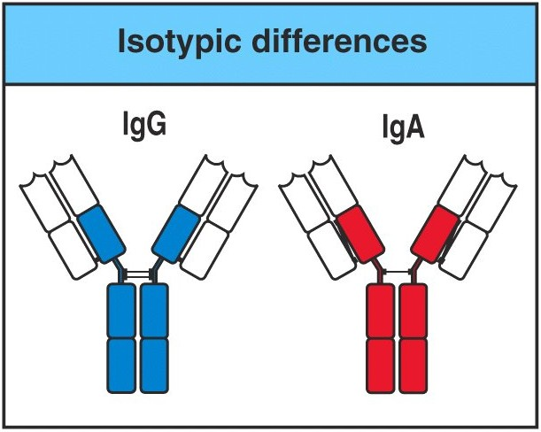
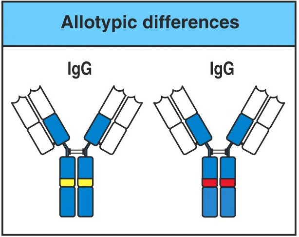
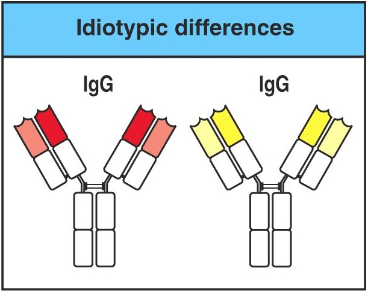

Your genome has about twenty thousand genes. Your antibodies number in the billions of distinct specificities. That is not a rounding error — it is the central problem of immunology, and the answer is that antibody genes are not inherited whole. They are assembled, in each B cell, from pieces.ژنوم شما حدود بیست هزار ژن دارد. آنتیبادیهایتان میلیاردها اختصاصیت متمایزند. این خطای گردکردن نیست — مسئلهٔ مرکزی ایمونولوژی است، و پاسخ این است که ژنهای آنتیبادی بهصورت کامل به ارث نمیرسند. در هر سلول B، از قطعات سر هم میشوند.
By the end of this Part you should be able toدر پایان این بخش باید بتوانید
State the problem of antibody diversity in numbers.مسئلهٔ تنوع آنتیبادی را با عدد بیان کنید.
List the mechanisms that generate diversity and say which is biggest.سازوکارهای ایجاد تنوع را فهرست و بگویید کدام بزرگتر است.
Distinguish isotype, allotype and idiotype, and say where each lives on the molecule.ایزوتیپ، آلوتیپ و ایدیوتیپ را تفکیک و بگویید هر یک کجای مولکول است.
2.1The Problem of Diversityمسئلهٔ تنوع

Fig 2.1Susumu Tonegawa, Nobel Prize in Physiology or Medicine 1987, “for his discovery of the genetic principle for generation of antibody diversity”. He showed that the DNA of a B cell is not the DNA it inherited.سوسومو تونهگاوا، نوبل پزشکی ۱۹۸۷، «برای کشف اصل ژنتیکی ایجاد تنوع آنتیبادی». او نشان داد DNA یک سلول B، همان DNAی بهارثرسیده نیست.
High-Yield — the number that defines the problemنکتهٔ کلیدی — عددی که مسئله را تعریف میکند
The human antibody repertoire contains on the order of 1011 distinct specificities. The human genome contains about 2 × 104 genes in total. There is therefore no possible way for one gene to encode one antibody — you would need five million times more genome than you have. Whatever the answer is, it must be combinatorial: a small number of parts assembled in a very large number of ways.رپرتوار آنتیبادی انسان حدود ۱۰۱۱ اختصاصیت متمایز دارد. ژنوم انسان رویهم حدود ۲×۱۰۴ ژن دارد. پس هیچ راهی نیست که یک ژن یک آنتیبادی را کد کند — پنج میلیون برابر ژنوم فعلیتان لازم داشتید. پاسخ هرچه باشد، باید ترکیبیاتی باشد: تعداد اندکی قطعه که به شمار بسیار زیادی راه سر هم شوند.
2.2V(D)J Recombinationنوترکیبی V(D)J

Fig 2.2 The three germline loci. Heavy chain on chromosome 14 — V, D, J and C segments. κ light chain on chromosome 2 and λ light chain on chromosome 22 — V, J and C only, no D segments. Every cell in your body is born with these arrays intact.سه جایگاه ژنی زایا. زنجیرهٔ سنگین روی کروموزوم ۱۴ — قطعات V، D، J و C. زنجیرهٔ سبک کاپا روی کروموزوم ۲ و لامبدا روی کروموزوم ۲۲ — فقط V، J و C، بدون قطعهٔ D. هر سلول بدنتان با این آرایههای دستنخورده متولد میشود.

Fig 2.3 The rearrangement. In a developing B cell one V, one D and one J segment are cut out of the array and spliced together at the DNA level; everything between them is deleted permanently. The result — VHDHJH — is a gene that exists in no other cell.بازآرایی. در سلول B در حال تکامل، یک قطعهٔ V، یک D و یک J از آرایه بریده و به هم پیوند میخورند، در سطح DNA؛ هر چه میانشان است برای همیشه حذف میشود. نتیجه، ژنی است که در هیچ سلول دیگری وجود ندارد.

Fig 2.4 From germline DNA to three different antibodies. The same starting array yields different products in three different lymphocyte clones, because somatic recombination (V-D-J joining) picks different segments and then adds or removes nucleotides at the junctions (N/P nucleotides) before sealing them. Transcription and RNA processing follow.از DNAی زایا تا سه آنتیبادی متفاوت. همان آرایهٔ آغازین در سه کلون لنفوسیتی، فرآوردههای متفاوتی میدهد، چون نوترکیبی سوماتیک قطعات متفاوتی برمیدارد و سپس پیش از بستن پیوند، نوکلئوتیدهایی در محل اتصال میافزاید یا برمیدارد. رونویسی و پردازش RNA در پی میآید.
Mechanism — how a small library becomes a huge repertoireمکانیسم — کتابخانهای کوچک چگونه به رپرتواری عظیم بدل میشود
Combinatorial segment choice. Any V can join any D can join any J.With roughly 40 V, 25 D and 6 J segments on the heavy chain, that alone is 40 × 25 × 6 ≈ 6,000 heavy-chain V regions from fewer than eighty gene segments.انتخاب ترکیبیاتی قطعات. هر V میتواند به هر D و آن به هر J بپیوندد.با حدود ۴۰ قطعهٔ V، ۲۵ D و ۶ J در زنجیرهٔ سنگین، همین بهتنهایی ۴۰×۲۵×۶ ≈ ۶۰۰۰ ناحیهٔ متغیر سنگین از کمتر از هشتاد قطعهٔ ژنی میدهد.
Junctional diversity. The joins are deliberately sloppy: nucleotides are added (N and P nucleotides) or chewed back at each junction.This multiplies the count by orders of magnitude — and, crucially, it falls exactly in CDR3, the loop that sits at the centre of the binding site. The single most variable part of an antibody is variable because the enzyme that joins the segments is imprecise on purpose.تنوع اتصالی. پیوندها عمداً نامرتباند: در هر محل اتصال نوکلئوتیدهایی افزوده یا جویده میشود.این شمارش را چند مرتبهٔ بزرگی ضرب میکند — و مهمتر، دقیقاً در CDR3 میافتد، حلقهای که در مرکز جایگاه اتصال نشسته. متغیرترین بخش آنتیبادی به این دلیل متغیر است که آنزیم پیونددهنده عمداً بیدقت است.
Heavy–light pairing. Any rearranged heavy chain can pair with any rearranged light chain.Two independent repertoires multiply. Roughly 104 heavy × 103 light ≈ 107 distinct binding sites before the cell has ever seen an antigen.جفتشدن سنگین–سبک. هر زنجیرهٔ سنگین بازآراییشده میتواند با هر سبک بازآراییشده جفت شود.دو رپرتوار مستقل در هم ضرب میشوند. تقریباً ۱۰۴ سنگین × ۱۰۳ سبک ≈ ۱۰۷ جایگاه اتصال متمایز، پیش از آنکه سلول هرگز آنتیژنی دیده باشد.
Somatic hypermutation.After antigen is encountered, point mutations are introduced into the rearranged V region at a rate a million times the background, and the cells whose mutations improved binding are selected.The first three mechanisms build a repertoire before exposure — that is why you can respond to a pathogen you have never met. This fourth one refines it after exposure, and is why a secondary response has higher affinity than a primary one.جهشزایی فوقالعادهٔ سوماتیک.پس از مواجهه با آنتیژن، جهشهای نقطهای با سرعتی یکمیلیون برابر زمینه در ناحیهٔ متغیر بازآراییشده وارد میشود و سلولهایی که جهششان اتصال را بهتر کرده، انتخاب میشوند.سه سازوکار نخست رپرتوار را پیش از مواجهه میسازند — و به همین دلیل میتوانید به پاتوژنی که هرگز ندیدهاید پاسخ دهید. این چهارمی آن را پس از مواجهه پالایش میکند، و دلیل آن است که پاسخ ثانویه میل ترکیبی بالاتری از اولیه دارد.
A repertoire of roughly 1011 specificities built from a few hundred gene segments — and a B cell whose genome is permanently different from that of every other cell in the body.رپرتواری با حدود ۱۰۱۱ اختصاصیت، ساختهشده از چند صد قطعهٔ ژنی — و سلول Bای که ژنومش برای همیشه با هر سلول دیگر بدن فرق دارد.
Three words that sound alike and are constantly confused. They answer three different questions about where a difference between two antibodies comes from, and each maps onto a different part of the molecule. The lecture groups them under heterogeneity of antibody and separates them by cause: isotype and allotype are endogenous — written in the genome — while diversity proper is exogenous, induced by the antigen encountered.سه واژه که شبیه هماند و پیوسته خلط میشوند. به سه پرسش متفاوت دربارهٔ منشأ تفاوت میان دو آنتیبادی پاسخ میدهند و هر یک به بخشی متفاوت از مولکول نگاشته میشود. درس آنها را زیر عنوان ناهمگنی آنتیبادی جمع میکند و بر اساس علت جدا میسازد: ایزوتیپ و آلوتیپ درونزادند — در ژنوم نوشته شدهاند — در حالیکه تنوع بهمعنای خاص، برونزاد است و آنتیژنِ مواجهشده آن را القا میکند.

Fig 2.5Isotypic — IgG versus IgA. The whole constant region differs, because they use different heavy-chain genes.ایزوتیپی — IgG در برابر IgA. تمام ناحیهٔ ثابت فرق دارد، چون ژنهای زنجیرهٔ سنگین متفاوتی بهکار میبرند.

Fig 2.6Allotypic — IgG versus IgG. Same class; a small difference within the constant region, reflecting different alleles in two people.آلوتیپی — IgG در برابر IgG. همان کلاس؛ تفاوتی کوچک درون ناحیهٔ ثابت، بازتاب آللهای متفاوت در دو فرد.

Fig 2.7Idiotypic — IgG versus IgG, same person. The variable region differs, because the two antibodies came from different B-cell clones.ایدیوتیپی — IgG در برابر IgG، در یک فرد. ناحیهٔ متغیر فرق دارد، چون دو آنتیبادی از کلونهای متفاوت سلول B آمدهاند.
Table 2.1 The three kinds of variationجدول ۲.۱ — سه نوع تنوع
Isotypeایزوتیپ
Allotypeآلوتیپ
Idiotypeایدیوتیپ
Where on the moleculeکجای مولکول
C regionC-endناحیهٔ ثابت
C regionC-endناحیهٔ ثابت
V region, especially the CDRsV-endناحیهٔ متغیر، بهویژه CDRها
Differs betweenتفاوت میان
Classes and subclasses — IgG vs IgA, IgG1 vs IgG3کلاسها و زیرکلاسها
Individuals of the same speciesافراد یک گونه
Clones — even within one individualکلونها — حتی درون یک فرد
Genetic basisمبنای ژنتیکی
Different genes, all present in every healthy member of the speciesژنهای متفاوت، که در هر عضو سالم گونه حاضرند
Different alleles of the same geneآللهای متفاوت یک ژن
Different V(D)J rearrangement and somatic mutationبازآرایی V(D)J متفاوت و جهش سوماتیک
You haveشما دارید
All of them — everyone makes all five classesهمهشان را — هر کس هر پنج کلاس را میسازد
Only your own — which is why another person’s allotype can be immunogenic to youفقط مال خودتان را — و به همین دلیل آلوتیپ فرد دیگر میتواند برایتان ایمنیزا باشد
Billions of them, one per cloneمیلیاردها، یکی بهازای هر کلون
One-line memoryیادیار یکخطی
Iso = same for everyoneایزو = برای همه یکسان
Allo = other peopleآلو = افراد دیگر
Idio = individual cloneایدیو = کلون فردی
Exam Trap — anti-idiotype antibodies and why they existدام امتحانی — آنتیبادی ضدایدیوتیپ و چرایی وجودش
An idiotype is the antigenic determinant of the V region — which is to say, the binding site of one antibody can itself be recognised as an antigen by another antibody. That is not a curiosity: it is the basis of idiotype network regulation, and it is why rheumatoid factor (an antibody against the Fc of IgG) and anti-idiotype antibodies are separate phenomena. The examinable point is simply that an antibody can be an antigen, and which part gets recognised names the phenomenon: V region → anti-idiotype; C region of another species → anti-isotype; C region of another person → anti-allotype.ایدیوتیپ، تعیینکنندهٔ آنتیژنی ناحیهٔ متغیر است — یعنی جایگاه اتصال یک آنتیبادی میتواند خود بهعنوان آنتیژن توسط آنتیبادی دیگری شناسایی شود. این نکتهای عجیب و بیمصرف نیست: مبنای تنظیم شبکهٔ ایدیوتیپی است، و به همین دلیل فاکتور روماتوئید (آنتیبادی علیه Fc ایمونوگلوبولین G) و آنتیبادی ضدایدیوتیپ دو پدیدهٔ جدا هستند. نکتهٔ قابلسنجش صرفاً این است که یک آنتیبادی میتواند آنتیژن باشد، و اینکه کدام بخشش شناسایی شود نام پدیده را تعیین میکند.